Positionsbestemmelse uden GPS (slides)
Intro til projektopgaven
Data, TEC
26. november 2026
Positionering uden GPS
Foto: Intel Free Press, CC BY-SA 2.0, via Wikimedia Commons
.jpg){kind=link}
Hvormange, og hvor ?
- GPS kræver frit udsyn til satellitterne
- Indendørs er signalet svagt, unøjagtigt eller helt væk
- i metroen
- i indkøbscentre
- på skolen
- Man gerne vide
- hvor en enhed er, og
- hvor mange der er
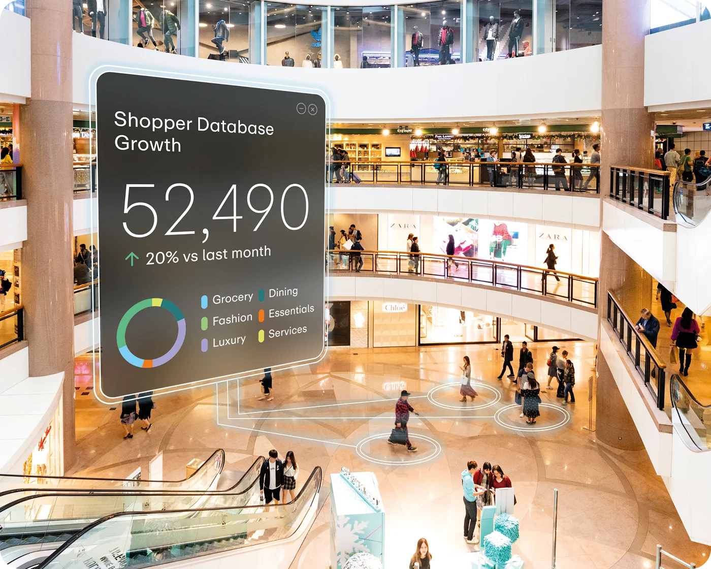
Hvad kan man så bruge?
| Teknologi | Typisk nøjagtighed | Kræver |
|---|---|---|
| UWB (Ultra-Wideband) | ned til ca. 10 cm | særlige UWB-chips og ankre |
| Bluetooth (BLE) | 1–5 m | beacons, eller at enheden sender BLE |
| Wifi | 3–15 m | access points eller lyttere, der fanger pakker |
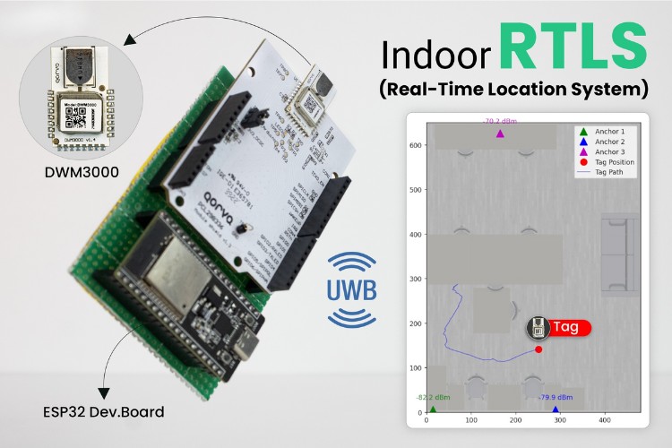
Vi bruger wifi: fordi ESP32 har det indbygget, og næsten alle telefoner har det tændt
Wifi: hvad kan man se?
- Telefoner sender pakker, også når de ikke er forbundet: probe requests (“er mit net her?”)
- En ESP32 i promiscuous mode kan lytte med på pakker, der ikke er til den
- I hver pakke kan man se
- afsenderens MAC-adresse
- signalstyrken (RSSI, i dBm)
- tidspunkt og kanal
- Nyere telefoner bruger tilfældige MAC-adresser, når de leder efter net. Hvad betyder det for os?
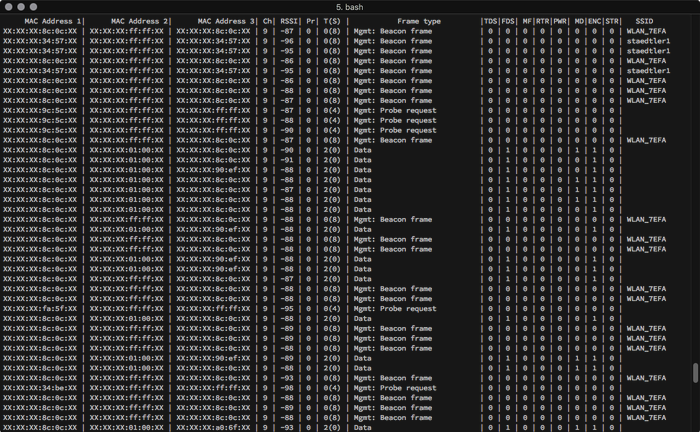
Opstillingen
- Flere ESP32 placeret i hjørnerne af et område (jeres bord eller lokalet)
- Hver ESP32 lytter efter wifi-pakker og måler signalstyrken (RSSI)
- Signalstyrke → omtrentlig afstand til telefonen
- Afstande fra flere ESP32 → position (x, y)
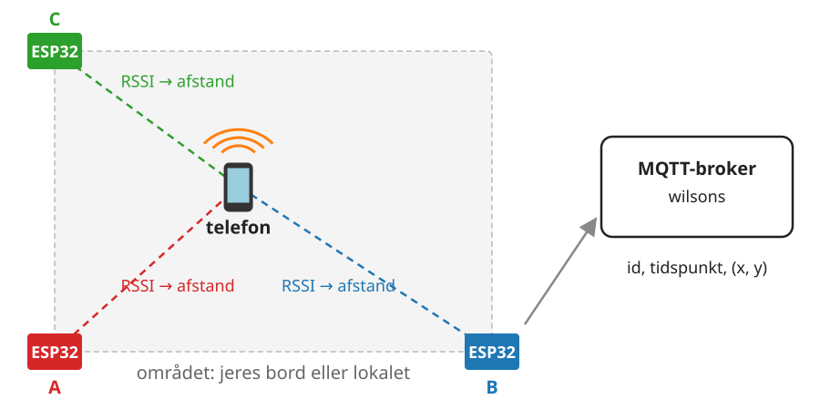
Matematikken bag
- Signalstyrke → afstand: signalet bliver svagere med afstanden
- \(RSSI = A - 10 \cdot n \cdot \log_{10}(d)\)
- \(A\) er RSSI ved 1 m, \(n\) afhænger af rummet
- Afstande → position: trilateration
- afstanden fra én lytter giver en cirkel
- tre lyttere giver tre cirkler, og telefonen er omtrent, hvor de mødes
- RSSI svinger meget (vægge, kroppe, telefonens retning), så positionen er et skøn
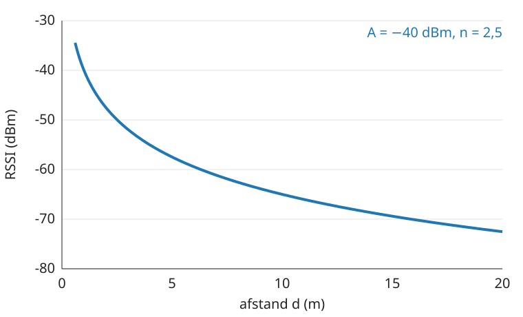
Eksempel: fra RSSI til afstand
Løs formlen for \(d\):
\[d = 10^{\frac{A - RSSI}{10 \cdot n}}\]
Med \(A = -40\) dBm (målt ved 1 m) og \(n = 2{,}5\) (indendørs):
| Målt RSSI | Regnestykke | Afstand |
|---|---|---|
| −40 dBm | \(10^{0/25}\) | 1,0 m |
| −55 dBm | \(10^{15/25} = 10^{0{,}6}\) | 4,0 m |
| −70 dBm | \(10^{30/25} = 10^{1{,}2}\) | 15,8 m |
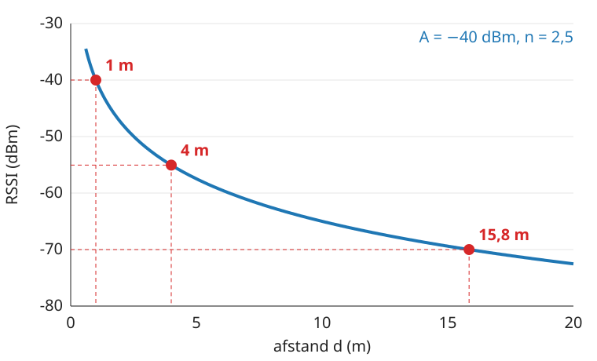
- \(A\) og \(n\) skal I selv måle i jeres lokale: stil telefonen på kendte afstande og aflæs RSSI
- Læg mærke til: 15 dB svagere signal betyder 4 gange så langt væk
Eksempel: trilateration
Tre ESP32 i et lokale på 4 × 3 m. De har målt afstanden til telefonen:
| Placering | Afstand \(d\) | \(d^2\) | |
|---|---|---|---|
| A | (0, 0) | 2,24 m | 5 |
| B | (4, 0) | 3,61 m | 13 |
| C | (0, 3) | 1,41 m | 2 |
Hver afstand giver en cirkel om sin ESP32:
\[ \begin{aligned} x^2 + y^2 &= 5 \\ (x-4)^2 + y^2 &= 13 \\ x^2 + (y-3)^2 &= 2 \end{aligned} \]
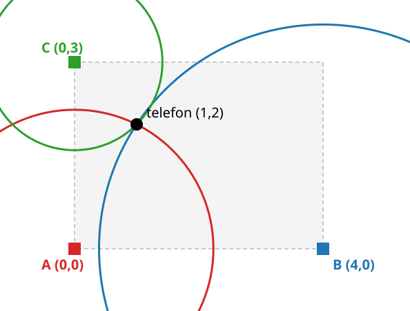
Eksempel: løs ligningerne
Træk ligning A fra de to andre. Så forsvinder \(x^2\) og \(y^2\):
\[ \begin{aligned} (x-4)^2 + y^2 - (x^2 + y^2) &= 13 - 5 &\Rightarrow\quad -8x + 16 &= 8 &\Rightarrow\quad x &= 1 \\ x^2 + (y-3)^2 - (x^2 + y^2) &= 2 - 5 &\Rightarrow\quad -6y + 9 &= -3 &\Rightarrow\quad y &= 2 \end{aligned} \]
Telefonen står i (1, 2).
- To rette linjer i stedet for tre cirkler: let at regne ud på en ESP32
- I virkeligheden mødes cirklerne ikke i ét punkt. Find det punkt, der passer bedst: gennemsnit af flere målinger, flere ESP32, mindste kvadraters metode
- Trilateration bruger afstande, triangulering bruger vinkler. En ESP32 kan kun måle afstande
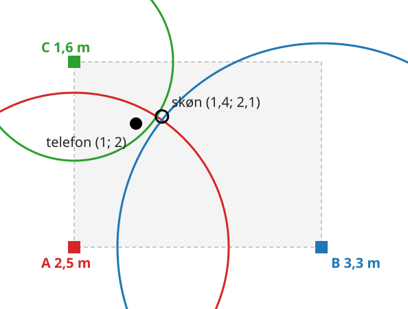
Hvem bruger det?
- Indkøbscentre og butikker: hvor mange kommer, hvor går de hen, hvor længe bliver de?
- Lufthavne og stationer: kølængder og trængsel
- Museer, hospitaler og lagre: find vej, find udstyr
- Trafik: rejsetid ud fra de samme enheder set to steder

Hvad må man?
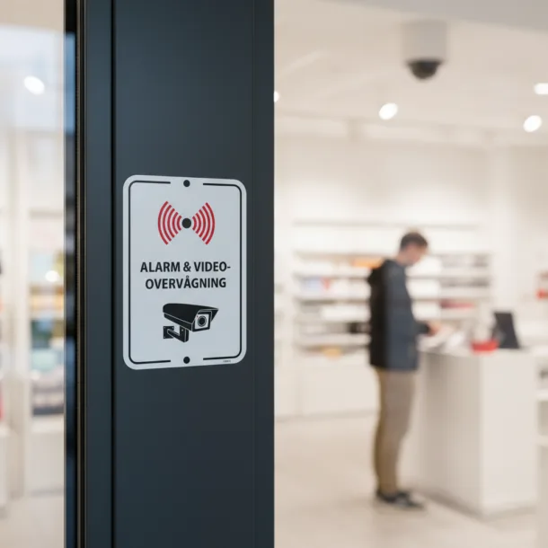
Data om andre mennesker
- Har personerne givet tilsagn?
- Ved de overhovedet, at de bliver registreret?
- Hvor følsom er en MAC-adresse?
- Den kan følge en bestemt telefon, og dermed en person
- Hvad sker der, når vi indsamler: data bliver gemt, kopieret og kan bruges til andet
- Berigelse: MAC + tid + sted siger meget mere end MAC alene
- hvem kommer her hver tirsdag kl. 8?
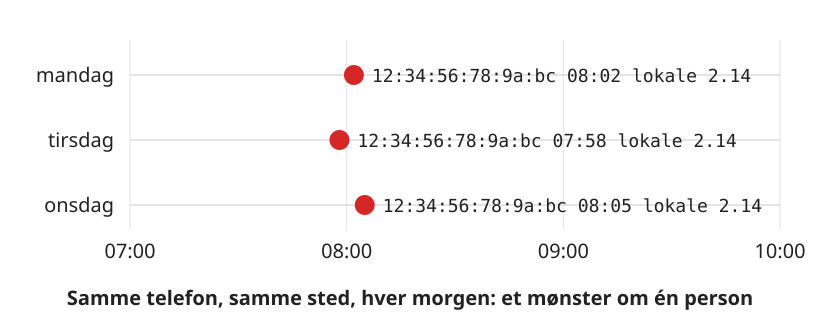
GDPR
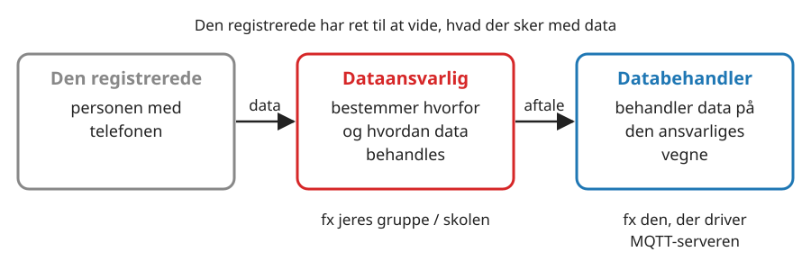
- Dataansvarlig: den, der bestemmer, hvorfor og hvordan data behandles
- Databehandler: den, der behandler data på den ansvarliges vegne
- Sikkerhed: hvem kan få adgang, og kan andre lytte med?
Sårbarhed
\(sårbarhed = r \cdot s\)
- \(r\): risikoen for et brud på datasikkerheden?
- \(s\): skaden for med personerne, hvis data slipper ud?
Databegrænsning
- Brug kun de data, der er nødvendige for formålet
- Gem dem kun, så længe det er nødvendigt
- Kan I tælle og placere enheder uden at gemme MAC-adressen?
- hashe, afkorte, skifte nøgle hver dag, slette efter kort tid
- Jeres valg her er en del af bedømmelsen
Opgaven
Formalia
- Grupper på 2–3, oprettes på itslearning
- I bygger en opstilling med flere ESP32, der lytter efter telefoner
- Resultatet sendes til den lokale MQTT-broker: id, tidspunkt, (x, y)
- Data skal være klar til statistik (fx heatmap), men visualisering er ikke et krav
- Hele opgaven: Projektopgave, Positionsbestemmelse
En eksplorativ opgave
Der er ikke én rigtig løsning. I skal undersøge:
- muligheder: hvad kan lade sig gøre med en ESP32?
- teknologier: wifi, BLE, ESP-NOW, ESP-MESH
- algoritmer og metoder: afstand, trilateration, filtrering af støj
- alternativer: hvad gjorde I ikke, og hvorfor?
- “konkurrenter”: hvordan løser andre det?
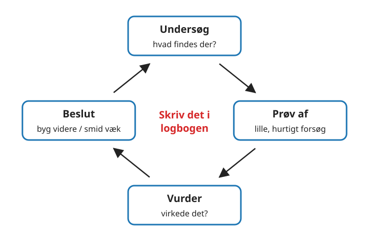
Processen tæller
Processen er vigtig, også i bedømmelsen.
- Projektstyring
- en plan, der bliver justeret undervejs
- en logbog, som alle skriver i hver dag (i git)
- Design
- algoritmedesign: hvordan bliver målinger til en position?
- datadesign: hvad sendes, hvad gemmes, hvad smides væk?
- projektdesign: hvilke dele, og hvem laver hvad?
Skærmbillede: git-log eller commit-graf fra et demo-repo (eller et elevprojekt, med tilladelse)
Aflevering
- På itslearning: zip eller link til jeres repo (læreren skal have adgang)
- Processen fra starten: logbog og arbejdsportfolio
- En projektbeskrivelse
- Programkode
- Opsætningsvejledning: en anden skal kunne få opstillingen til at virke
- Dataeksempler: hvad sender opstillingen faktisk?